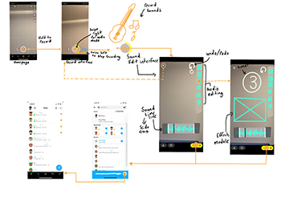

Project Context
The goal of this Snapchat Feature project is to research Snapchat’s existing interface, interaction patterns, features, and users to create a new feature. The new feature must consider the information found from the research, to make successful design decisions.
Snapchat Research
Upon interviewing a couple of users in the domain of university students and recently graduated students. I found that their use of Snapchat has declined to be more reactive than proactive. These Snapchat users only use the application when their friends try to connect with them. When asked why they do not choose to use Snapchat. They explained feelings of confusion when they navigate through the app. These feelings of confusion are more than enough to deter them from using Snapchat and resorting to other applications that share similar features like Instagram.
Proposed Feature
Snap Collab - A feature that lets users collaboratively create videos that have an emphasis on sounds. Users can send Snapchats like normal but can overlay their sound recordings over top of each other.
Here is my sketched storyboard
Prototype
A dynamic high-fidelity prototype of the feature was made using Protopie.
Reflection
In reflection, this was a fun project that taught me the importance of user research and how it is used to inform design decisions when creating a digital project. If I were to do this project again, I would pick an application that I am not as familiar with. Picking Snapchat was a comfortable move for me because it felt like I had a good idea of the user base of Snapchat. Picking a different app that I don’t have as much familiarity with would have forced me to do further research on the app and its users and would have been more challenging yet interesting to come up with a design solution.